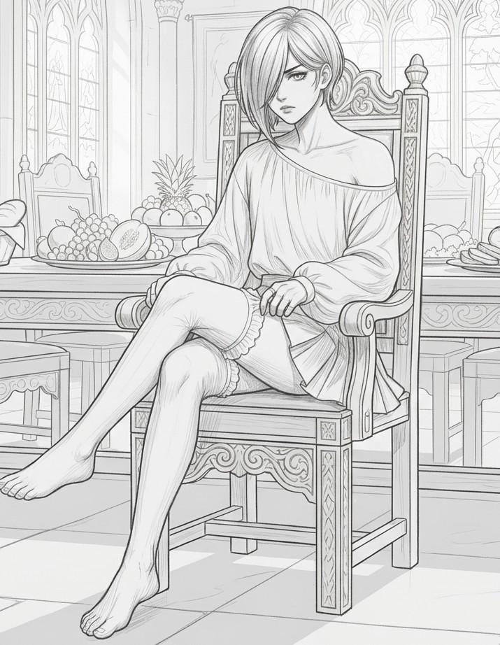
A luz dourada do sol de Aetheryon atravessava os imensos vitrais lapidados do Castelo Lancehearth, banhando a colossal mesa de carvalho do grande salão real. O cheiro de pães frescos, frutas das Naturelands e carnes assadas preenchia o ar.
A rotina da nobreza parecia tranquila, até o ruído suave de passos descalços e o balançar delicado de uma saia curta quebrarem o silêncio.
Ashlan entrou deslizando pelo salão. O jovem príncipe caçula vestia uma blusa larga que caía suavemente por um dos ombros e meias brancas thigh highs que subiam até o meio de suas coxas delicadas. Com um suspiro dramático e um dengo quase infantil, ele se jogou com leveza em uma das cadeiras esculpidas, ajeitando as meias com dedos finos e fazendo um biquinho de insatisfação.
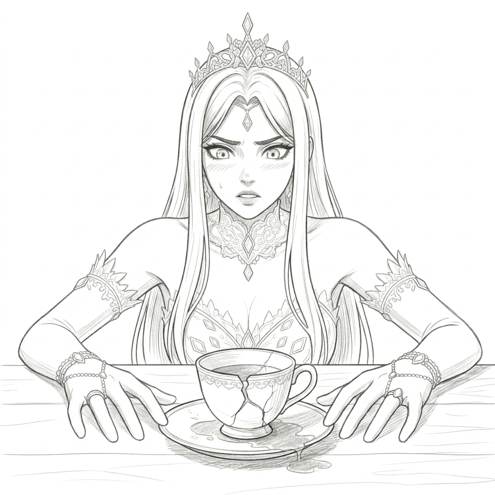
— Ashlan, pelo amor de Freya, vira homem nessa mesa pelo menos por cinco minutos! — esbravejou a Alta Sacerdotisa, o rosto vermelho de pura indignação enquanto o jovem empregado Elian quase derrubava a bandeja de pães no chão, tremendo de vergonha e olhando disfarçadamente para a princesa. — Nós estamos em uma mesa real! Você é um guerreiro da casa Lancehearth, empunha uma relíquia e fica aí se comportando como uma garotinha mimada no meio do salão!
Ao lado dela, Ashton soltou uma gargalhada alta e grave, cravando o garfo em uma porção gigante de carne e dando uma dentada suculenta. — Deixa o garoto em paz, Ashley! — debochou Ashton, rindo da cara de choro do caçula. — Se o nosso "Pequeno Vendaval" quer reclamar do vento, quem sou eu pra discordar? Pelo menos sobra mais carne pra mim.
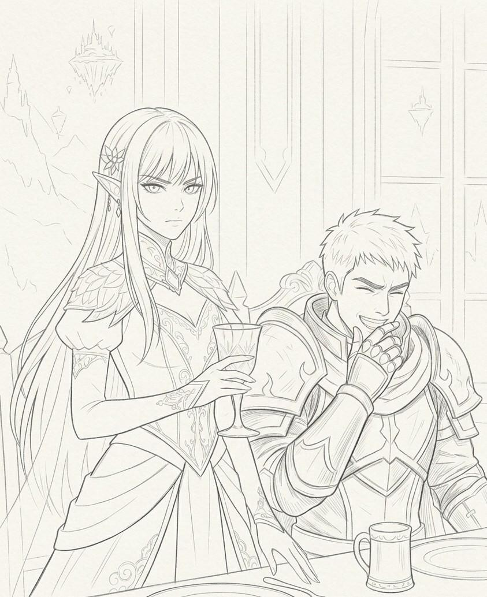
No topo da mesa, a matriarca Scarlett mantinha uma postura impecável. A elegante Elfa Mantra segurava sua taça com extrema delicadeza, mas o olhar que ela lançou sobre Ashlan foi tão gelado e cortante que a temperatura do salão pareceu despencar dois graus em um segundo. Ao lado dela, Dastan riu baixo, tentando acalmar os ânimos antes que as armas fossem sacadas ali mesmo no café. Perto da cadeira de Ashlan, encostada na tapeçaria real, repousava a Bainha da GaleForce — um lembrete silencioso de que, por trás daquela atitude dócil e manhosa, residia o guerreiro mais ágil e perigoso da nova geração
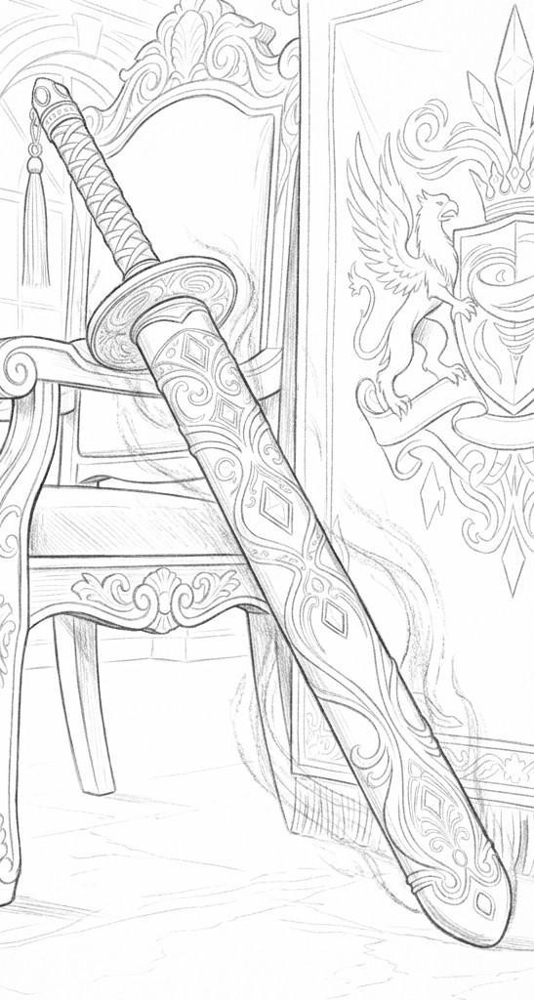
O ranger da madeira quando a Princesa Ashley bateu a xícara fez o jovem Elian dar um salto de meio metro. O pequeno criado afeminado, segurando a xícara reserva com as duas mãos trêmulas, tentava desesperadamente manter o olhar fixo no chão para que a princesa não notasse o rubor queimando em suas bochechas.
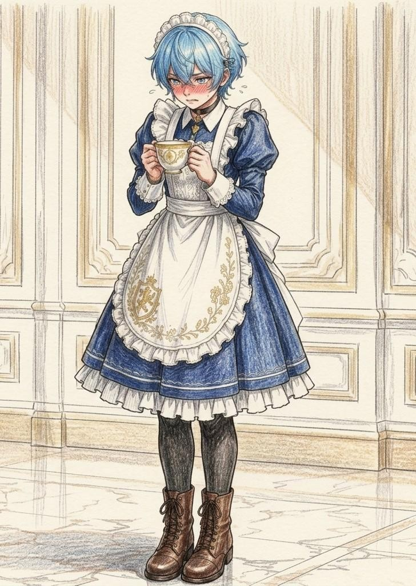
— P-Princesa Ashley... o seu chá... com folhas de camomila das Naturelands, como a senhora gosta... — balbuciou Elian, curvando-se com tanta pressa que a barra de seu avental engomado quase rasgou.
Ashley respirou fundo, fechando os olhos por três segundos para recuperar a postura rígida de Alta Sacerdotisa. Ela ajustou as mangas da sua túnica branca e dourada, aceitou a xícara com um aceno aristocrático e deu um gole lento, ignorando o fato de que seu coração ainda batia acelerado pela irritação com o irmão.
— Obrigada, Elian. Pelo menos alguém neste castelo sabe o que significa decoro e disciplina — disse ela, a voz fria, embora o olhar que deu por cima da porcelana ao criado tenha sido bem mais suave do que o direcionado a Ashlan.
Ashlan, por sua vez, levou uma das mãos delicadas ao peito, fazendo uma expressão de pura injúria. Ele deu uma ajeitada dramática na meia thigh high que tinha escorregado um centímetro no joelho e bufou, virando o rosto pro lado.
— Rude! Pura e simples rudesa! — reclamou Ashlan, a voz manhosa ecoando pelas colunas de mármore do salão. — Só porque eu me importo com a estética do meu cabelo e com a maciez da minha pele não significa que eu seja menos guerreiro. Quando a GaleForce canta no vento, ninguém lembra de ficar me julgando por vestir saia!
— Se você passasse metade do tempo treinando a sua postura de combate em vez de arrumar esse cabelinho fofo, a GaleForce nem precisaria cantar tanto — provocou Ashton, dando uma forte palmada nas costas do caçula que fez Ashlan quase cair pra frente na mesa.
— Ei! Cuidado com a ignorância, Ashton! — Ashlan choramingou, limpando uma migalha invisível do ombro da blusa larga.
No topo da mesa, Scarlett pousou a taça de cristal com um som quase imperceptível. O olhar da Matriarca Elfa Mantra passou de Ashton para Ashlan. O silêncio que se seguiu fez até a respiração de Dastan pausar por um segundo.
— Chega de infantilidades na mesa — cortou Scarlett, a voz suave, porém carregada de uma autoridade inquestionável de quem já liderou exércitos. — A manhã está avançando. Temos obrigações. Ashton, Ashlan... vocês dois têm treinos agendados na Lancehearth Academy. E você, Ashley...
A princesa curvou a cabeça levemente em sinal de respeito à mãe.
— Eu estarei na Catedral de Santalume, mãe. A iluminação de hoje exige purificação e canalização de mana junto ao DivinePillar.
🏛️ O Santuário da Luz: A Catedral de Santalume
Enquanto os irmãos se preparavam para atravessar o castelo, Ashley seguiu por um caminho isolado na ala leste do complexo real. A Catedral de Santalume não era um templo comum. Construída inteiramente em mármore branco e incrustada com cristais refletores de luz solar trazidos das minas mais profundas de Diamond City, o local funcionava como um amplificador natural de magia sagrada.
O teto abobadado tinha vitrais imensos que desenhavam a história da deusa Freya e dos ancestrais da família. No centro do altar elevado, o DivinePillar repousava sobre um pedestal de quartzo puro. O cajado lendário emitia um zumbido grave e harmonioso, uma frequência contínua de luz que purificava qualquer resquício de energia sombria a quilômetros de distância.
Ashley caminhou em silêncio. O eco de seus sapatos de sola rígida ressoava nas paredes de pedra polida. Ela tirou a capa ornamental, revelando as linhas ajustadas de suas vestes de sacerdotisa.
Com passos lentos, ela subiu os degraus do altar e colocou as duas mãos sobre a superfície do cajado. No mesmo instante, uma onda de pulso dourado se espalhou pelo santuário, fazendo suas longas mechas de cabelo flutuarem levemente contra a gravidade. Ali, no isolamento do templo, longe do caos dos irmãos e de suas próprias contradições internas, a Alta Sacerdotisa encontrava sua força... e sua rigidez.
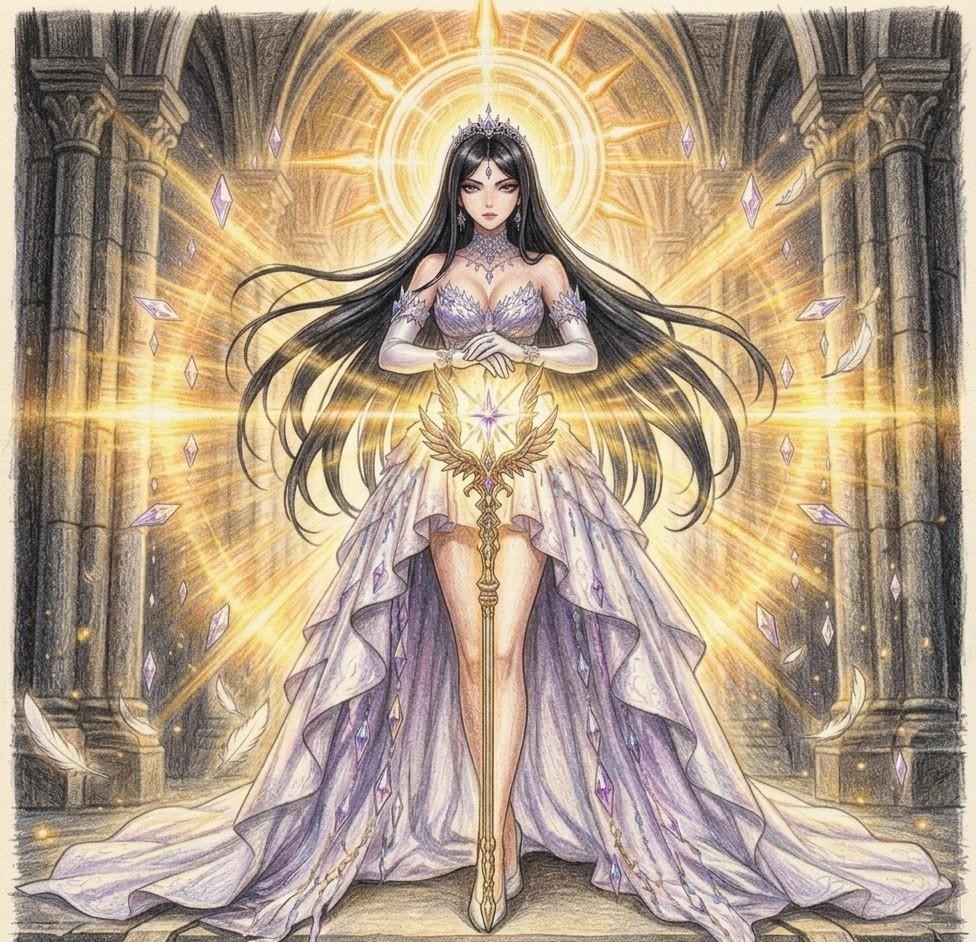
A Caminhada por Diamond City: O Brilho e a Podridão Enquanto Ashley iniciava suas orações na catedral, Ashlan e Ashton deixavam os portões de ferro do Castelo Lancehearth a pé, optando por caminhar até a Lancehearth Academy. O contraste da Cidade de Diamante era um espetáculo à parte. Na ala alta, o Distrito Cristalino, as ruas eram pavimentadas com pedras claras e polidas que reluziam sob o sol da manhã. Torres majestosas decoradas com rubis, safiras e diamantes brutos se erguiam em direção aos céus. Carruagens luxuosas movidas a cristais de tração passavam devagar, e famílias da nobreza de Elfos Mantra e Humanos passeavam trajando sedas finas. Crianças nobres, vestidas como pequenas miniaturas de aristocratas, corriam pelos jardins flutuantes brincando com brinquedos mágicos que soltavam fagulhas coloridas no ar. Ashlan caminhava com passos curtos e graciosos, agora vestindo um shortinho preto, a bainha da GaleForce batendo suavemente contra sua coxa coberta pela meia branca. Ele chamava a atenção por onde passava — nobres olhavam de canto de olho, alguns cochichando sobre a estética andrógina e delicada do príncipe caçula, enquanto outros o cumprimentavam com veneração. Ashlan respondia a todos com um aceno charmoso de cabeça e um sorriso discreto.
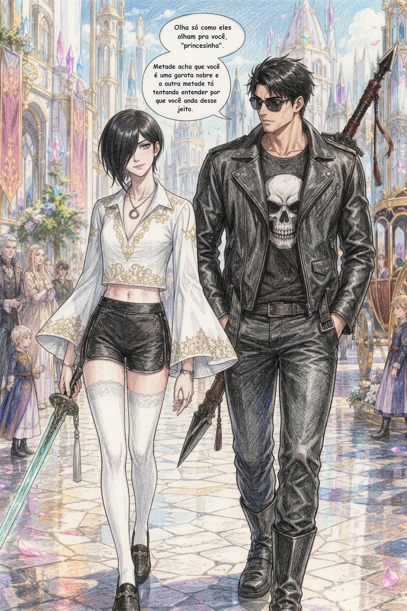
— Olha só como eles olham pra você, "princesinha" — Ashton provocou, caminhando ao lado com passos largos e pesados, a DoomSpear amarrada às suas costas envolta em panos grossos de couro. — Metade acha que você é uma garota nobre e a outra metade tá tentando entender por que você anda desse jeito.
— Inveja, meu caro irmão. É puro recalque porque as pernas deles não ficam tão bem em meias 7/8 quanto as minhas — retrucou Ashlan, dando uma risadinha provocante.
Porém, à medida que avançavam em direção à zona limite onde a Academia fora construída, a paisagem começava a mudar drasticamente.
Diamond City era conhecida mundialmente como a metrópole mais rica e reluzente do continente, mas até os diamantes mais puros carregavam rachaduras.
Ao cruzarem o arco de pedra que separava o Distrito Cristalino do Setor da Penumbra (o lado podre e esquecido da capital), o brilho sumia. As ruas reluzentes davam lugar a paralelepípedos encardidos e manchados de fuligem. As poças d'água acumulavam o lixo dos esgotos alquímicos das grandes fábricas.
Ali, o luxo dava lugar à sobrevivência.
Crianças humanas e de raças mistas, com roupas traposas e narizes sujos de poeira, corriam pelos becos estreitos perseguindo gatos de rua ou fingindo duelos com pedaços de madeira quebrados. Trabalhadores braçais carregavam caixas pesadas de minério sob o olhar severo de guardas mercenários contratados pela nobreza.
— Sempre me dá um aperto no peito passar por aqui... — murmurou Ashlan, diminuindo o passo. O tom manhoso desapareceu por um segundo, dando lugar a uma serenidade triste enquanto ele observava uma garotinha de orelhas pontudas tentando consertar uma boneca de pano rasgada no meio do meio-fio. — Diamond City ostenta tanto ouro para os de fora, mas esconde o próprio lixo debaixo do tapete.
Ashton olhou para o irmão, o semblante ficando mais sério. Ele ajustou a alça da DoomSpear no ombro.
— É por isso que a gente treina, Ashlan. A Karyna Blackfield lá em Zenathor tá só esperando uma brecha nessa ganância da nossa nobreza pra esmagar tudo isso aqui. Se a gente não mantiver a guarda alta, nem o Distrito Cristalino nem a Penumbra vão sobram pra contar história.
À frente deles, no topo de uma colina de pedra cinzenta que marcava a transição entre os dois mundos, erguiam-se as muralhas imponentes da Lancehearth Academy — a lendária instituição fundada por Freya Lancehearth, onde a próxima geração de guerreiros de Aetheryon aprendia a derramar sangue e dominar a mana.
O Vestiário da Lancehearth Academy
Ashton empurrou as pesadas portas duplas do ginásio principal da Lancehearth Academy com um único estrondo. O cheiro de suor, ferro quente e ozônio mágico preenchia o ar. O lugar fervilhava de atividade: os novatos, em sua maioria guerreiros humanos e elfos das províncias vizinhas, treinavam feitiços básicos e golpes de espada sob o olhar rigoroso dos instrutores veteranos.
A presença dos Príncipes de Diamond City fez o burburinho diminuir por alguns segundos. Ashton caminhava como um trator, a fúria e o peso dos músculos chamando a atenção de todos. Ashlan vinha logo atrás, os passos leves, segurando a bainha da GaleForce como se fosse uma bolsa de grife.
— Vou deixar essa lança infernal no armário antes que eu esbarre em algum novato e arranque a cabeça dele sem querer — rosnou Ashton, flexionando os ombros largos enquanto ajeitava a DoomSpear nas costas.
— Eu vou com você. Preciso retocar meu delineador de vento, o sol do Distrito Cristalino quase estragou minha maquiagem — Ashlan murmurou, passando a mão pelos cabelos perfeitamente arrumados.
🚿 O Mal-Entendido no Vestiário Masculino
O vestiário masculino da academia era um salão rústico de pedra com bancos de madeira e fileiras de armários de ferro mágico. Três alunos novatos — todos rapazes robustos e suados do interior que tinham acabado de chegar à capital — estavam ali trocando as armaduras, rindo e conversando alto.
Até que a porta abriu.
Ashlan entrou primeiro, as pernas finas e torneadas destacadas pelas meias thigh highs brancas, os shorts curtíssimos e a blusinha larga caída em um dos ombros. Ele caminhou com aquela elegância letal de modelo até um dos grandes espelhos de corpo inteiro, soltou um longo e manhoso suspiro de cansaço, e tirou os shorts. Ele colocou uma saia preta em seguida.
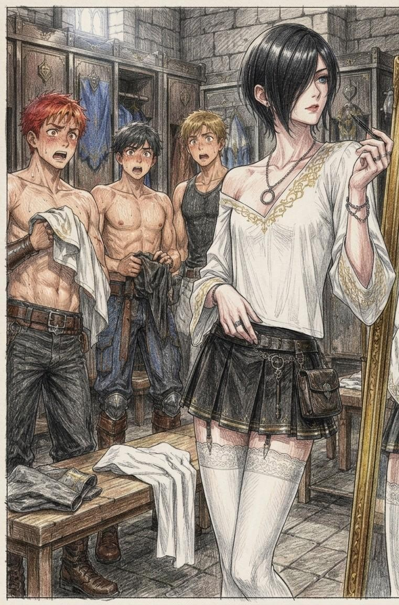
O silêncio no vestiário foi absoluto.
Os três novatos congelaram no lugar, com as calças na mão ou camisas pela metade. Um deles, um humano ruivo com cicatrizes de treino no rosto, arregalou os olhos, o queixo caindo ao ver as coxas expostas e a silhueta delicada do príncipe.
— Pelos deuses... a ala das garotas fica do outro lado do pátio, senhorita — gaguejou o humano ruivo, corando furiosamente enquanto tentava cobrir o peito suado com uma toalha. — Você não deveria estar aqui! Os instrutores vão...
Ashlan parou de passar a maquiagem no olho esquerdo. Ele se virou lentamente, piscando os cílios longos com uma expressão de pura e angelical confusão.
— Ala das garotas? — Ashlan deu uma risadinha suave, uma melodia cristalina que fez os três rapazes engolirem em seco. Ele se encostou no balcão, cruzando as pernas e apoiando o queixo na mão, olhando-os de cima a baixo com um brilho atrevido nos olhos. — Oh, que fofo. Vocês são novatos, não são? Fiquem tranquilos, rapazes. Eu gosto muito da vista daqui.
O ruivo quase teve um colapso cardíaco, o rosto ficando da mesma cor do próprio cabelo. Os outros dois começaram a sussurrar desesperados, achando que tinham dado de cara com uma fada súcubo sádica ou uma nobre pervertida de Diamond City.
💪 O Impacto do Herdeiro Humano
O clima de pânico cômico foi interrompido quando a figura colossal de Ashton atravessou a porta do vestiário. Ele não disse nada, apenas grunhiu de frustração com o calor do lugar.
Com um movimento rápido e bruto, Ashton puxou a pesada camisa de couro por cima da cabeça e a jogou no chão.
O impacto visual foi imediato. O peito e o abdômen do filho de Dastan eram esculpidos como mármore, largos e densos, cobertos por uma leve camada de suor e algumas cicatrizes de treinos pesados que só adicionavam ao charme bruto. Era a pura genética dominante dos humanos de Aetheryon gritando no ambiente.
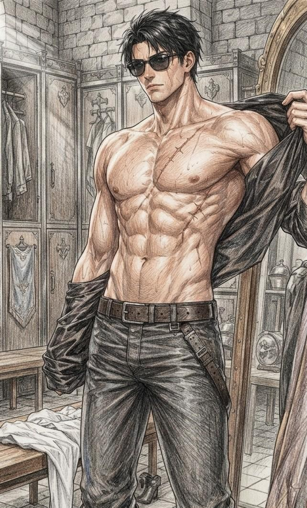
Se os rapazes novatos estavam em choque com Ashlan, agora quem perdia o fôlego eram as duas instrutoras elfas e uma aluna veterana que passavam pelo corredor e pararam exatamente na porta aberta do vestiário. As três ficaram paralisadas, babando descaradamente diante da montanha de músculos exposta de Ashton. Uma delas precisou se apoiar no batente da porta para não perder o equilíbrio.
Ashton bufou, completamente alheio (ou acostumado) aos olhares femininos devorando o seu tronco nu. Ele destrancou o armário e jogou a DoomSpear lá dentro com um baque surdo que fez o chão tremer.
— Ashlan, para de traumatizar os camponeses e vamos logo para a arena. Eu preciso socar alguma coisa antes do almoço — Ashton resmungou, passando a mão no cabelo suado enquanto pegava sua faixa de treino.
O humano ruivo olhou de Ashton para Ashlan, as engrenagens de sua mente novata estalando enquanto ele finalmente conectava as descrições lendárias aos dois ali presentes.
— A-Ashlan?! O "Pequeno Vendaval"?! — O garoto quase gritou, olhando em desespero para as saias curtas do elfo andrógino. — Você é o Príncipe Ashlan?!
Ashlan deu uma piscadinha charmosíssima e jogou um beijinho pro ar na direção do novato, o que fez o pobre rapaz tropeçar na própria toalha e cair sentado no banco de madeira.
— O próprio, querido. Mas se você continuar olhando para as minhas pernas desse jeito durante o treino, a GaleForce vai garantir que você não tenha mais olhos para admirar a vista — provocou Ashlan, dando um sorriso perigosamente doce antes de arrastar a sua bolsa de maquiagem e sair saltitando pelo corredor em direção à arena, deixando os três novatos questionando absolutamente tudo sobre a biologia e a realeza de Aetheryon.
📜 O Furacão e o Terremoto
A Arena Principal da Lancehearth Academy era um coliseu colossal. O chão era forrado com uma areia especial que absorvia impactos, e as arquibancadas de pedra mágica foram projetadas para suportar feitiços perdidos. Naquele horário, dezenas de novatos e instrutores estavam espalhados pelas arquibancadas, descansando.
Mas quando Ashton e Ashlan pisaram na areia, o silêncio caiu sobre o lugar.
Na primeira fileira, o humano ruivo do vestiário engoliu em seco, ainda não acreditando que o garoto de saia curta e meias brancas que estava ali no centro da arena era o lendário "Pequeno Vendaval".
— Regras normais, Ashlan? — Ashton gritou do outro lado da arena. Ele girou a pesada DoomSpear com uma única mão, o ar zumbindo ao redor do metal escuro. — Sem feitiços de aniquilação e sem chorar se eu estragar o seu cabelo!
— Por favor, Ashton... — Ashlan suspirou, apoiando uma mão na cintura e a outra no punho da GaleForce ainda na bainha. Ele deu uma piscadinha para os novatos na arquibancada, que prenderam a respiração. — Você não conseguiria encostar no meu cabelo nem se eu ficasse parado. Tenta a sorte.
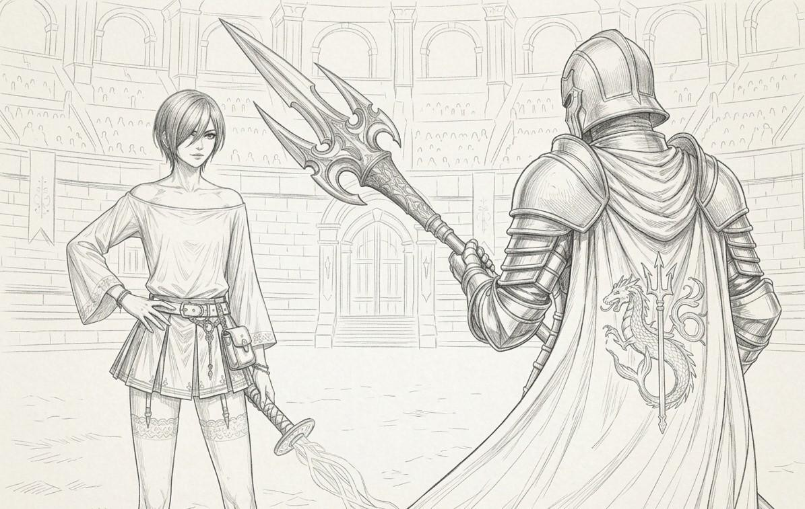
Ashton sorriu de forma predatória e colocou a GaleForce de volta na bainha. E então, ele sumiu.
O estrondo que se seguiu fez as arquibancadas tremerem. Ashton havia disparado para frente com uma explosão de pura força, cravando a bota no chão e levantando uma nuvem de areia. Em um milésimo de segundo, a montanha de armadura estava no ar, descendo a DoomSpear em um arco vertical devastador direto na cabeça de Ashlan.
BOOOM!
A lança atingiu o chão com o impacto de um meteoro. A areia especial explodiu como água, e uma rachadura se abriu na pedra mágica sob a arena. Os novatos gritaram, alguns cobrindo o rosto para se proteger da onda de choque e dos detritos.
— Pelos deuses! Ele matou o próprio irmão?! — berrou o novato ruivo, agarrando a grade.
Mas quando a poeira baixou, Ashlan não estava na cratera.
— Muito lento, maninho.
A voz suave veio de cima. Ashton olhou para o alto apenas a tempo de ver Ashlan flutuando suavemente a dez metros do chão, a saia e os cabelos esvoaçando de forma angelical. Ele havia usado seus "Passos de Brisa" para deslizar pelo deslocamento de ar do próprio ataque de Ashton.
O som de um gatilho sendo destravado ecoou. Ashlan finalmente sacou a GaleForce.
No momento em que a lâmina deixou a bainha, a pressão atmosférica da arena mudou. Um zumbido agudo, como o uivo de um furacão contido, tomou conta do lugar. A lâmina da espada brilhava em um tom etéreo e translúcido.
Ashlan mergulhou. Ele não caiu; ele foi disparado pelos ventos.
O choque entre a GaleForce e o cabo da DoomSpear gerou uma explosão sônica. Ashton trincou os dentes, os músculos do peito e dos braços saltando sob o esforço para segurar o bloqueio, enquanto Ashlan desferia não um, mas sete golpes consecutivos em menos de dois segundos.
Clang! Clang-clang-clang-clang!
Faíscas verdes e laranjas iluminavam a arena. Ashlan girava no ar como um pião letal. A flexibilidade do seu corpo andrógino permitia que ele atacasse de ângulos biologicamente impossíveis. Ele usou a ponta da pesada lança de Ashton como trampolim, deu um salto mortal para trás e, com um movimento gracioso do pulso, disparou três lâminas de vento condensado.
Ashton gargalhou, a adrenalina pura de Aetheryon correndo nas veias. Ele girou a DoomSpear, criando um escudo de pura força centrífuga que estilhaçou os ventos de Ashlan.
— É só isso que o vento tem pra me mostrar hoje?! — provocou Ashton, fincando a lança no chão e canalizando seu Ki, pronto para usar uma habilidade de destruição em área.
Ashlan pousou suavemente a alguns metros de distância. Ele suspirou de forma exagerada e dramática.
— Ok, ok, já chega. Você levantou muita poeira, Ashton. Olha isso! — Ashlan embainhou a GaleForce com um clique seco, o furacão na arena se dissipando instantaneamente. Ele começou a bater nas próprias meias, fazendo biquinho. — Minhas thigh highs novinhas estão imundas! Eu não vou continuar lutando nesse chiqueiro.
Ashton parou, piscando confuso, e soltou uma risada pesada, relaxando a postura e apoiando a lança no ombro gigante.
— Você é uma figura, Ash. Mas quase me pegou naquela sequência aérea. Se estivesse lutando sério, teria mirado no meu pescoço, não no cabo da lança.
Na arquibancada, o silêncio era absoluto.
Os três novatos do vestiário estavam com os queixos literalmente caídos. A garota veterana que antes babava pelo peitoral de Ashton agora olhava apavorada para a cratera no meio da arena, e depois para o delicado Ashlan, que agora tirava um espelhinho da bolsa para retocar a maquiagem como se não tivesse acabado de trocar golpes capazes de demolir um prédio.
O novato ruivo engoliu em seco, sussurrando para os amigos, pálido:
— Lembrem-me... de nunca, jamais... olhar para as pernas daquele garoto de novo. Ele arrancaria a minha cabeça antes de eu conseguir piscar.
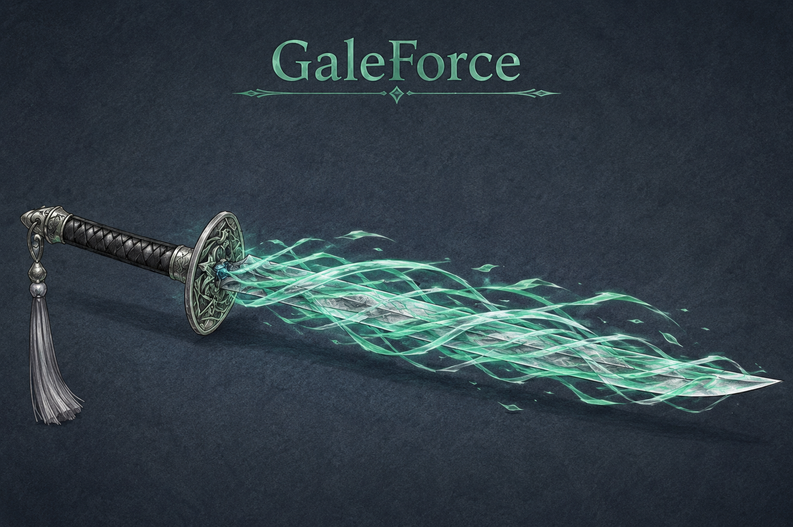
'GaleForce'
> A lendária katana GaleForce contém o poder elemental devastador do vento. Uma vez empunhada por Freya Lancehearth, essa lâmina agora pertence ao príncipe Ashlan Lancehearth. A combinação de sua agilidade com o poder impiedoso dessa lâmina fará até os maiores e mais temidos inimigos tremerem.
************************************************************
📜 O Javali de Safira e o Nobre Idiota
Ashton soltou uma gargalhada tão alta que o som reverberou nas arquibancadas de pedra da Lancehearth Academy, fazendo os novatos encolherem os ombros. Ele cravou a DoomSpear na areia e apoiou os braços cruzados sobre o cabo grosso da arma, olhando para o irmão, que ainda tentava, inutilmente, limpar a poeira mágica das meias brancas.
— Puta que pariu, Ashlan... — Ashton riu, enxugando o suor da testa com as costas da mão. — Você tem um furacão ancestral na cintura e me para a luta porque sujou a meia? A mamãe te mataria se visse essa frescura.
— A mamãe entende perfeitamente o valor de uma estética impecável, seu troglodita — rebateu Ashlan, erguendo o queixo de forma esnobe e dando as costas para o irmão. O balançar da sua saia curta hipnotizou mais uns dois novatos na arquibancada antes que ele virasse o rosto para encará-los com um olhar mortal. — Perderam alguma coisa aqui, seus merdas? Vão treinar antes que eu decida usar vocês de alvo.
Os novatos quase tropeçaram uns nos outros correndo para o outro lado do ginásio.
🍖 A Fome do Terremoto
Depois de um banho rápido (onde Ashlan gastou mais mana conjurando feitiços de secagem para não estragar as pontas do cabelo do que no próprio treino), os dois príncipes deixaram os portões da Academia e voltaram para as ruas do Distrito Cristalino.
O sol de Aetheryon já estava alto, e o estômago de Ashton roncou com um som que parecia um trovão contido. Ashton retirou a sua armadura, ficando sem camisa ali.
— Preciso de carne. Carne de verdade, não aquelas porções de passarinho que o Elian serve no castelo pra agradar a dieta da Ashley — resmungou Ashton, ajustando a alça pesada da lança nas costas nuas, já que ele nem se deu ao trabalho de colocar a camisa de couro de volta, desfilando seus músculos e cicatrizes sob o sol de Diamond City.
Eles viraram a esquina de uma avenida pavimentada com pedras de quartzo e entraram no Javali de Safira, uma das tavernas mais elitistas e caras do distrito, frequentada pela alta nobreza e por mercenários de luxo.
O lugar fedia a vinho envelhecido, especiarias caras e arrogância.
Ashton marchou até uma das mesas no fundo, chutou a cadeira para trás e se jogou nela, fazendo a madeira ranger. Ashlan veio logo atrás, deslizando pelo salão com a graça de uma fada. Ele puxou a própria cadeira com delicadeza, cruzou as pernas torneadas e apoiou os cotovelos na mesa, o decote caído em um dos ombros chamando a atenção de metade da taverna.
O garçom, tremendo levemente ao reconhecer a heráldica dos Lancehearth nas roupas deles, correu para anotar o pedido.
— Traz o maior pedaço de carne que vocês tiverem nessa porra de cozinha. E um barril de cerveja — ordenou Ashton, batendo uma moeda de ouro bruto na mesa.
— E para mim, apenas uma taça de vinho élfico e uma daquelas tortinhas de morango do leste — Ashlan pediu com uma voz doce, piscando para o garçom, que ficou da cor de um pimentão antes de correr para a cozinha.
🍷 O Erro Fatal de Lorde Vane
Foi exatamente nesse momento de calmaria que a merda aconteceu.
Da mesa ao lado, um Elfo Mantra de cabelos prateados longos, vestindo sedas absurdamente caras e com a arrogância estampada na cara, levantou-se com uma taça de vinho na mão. Era Lorde Vane, o herdeiro de uma das casas nobres secundárias de Diamond City. Um babaca mimado que claramente não prestava atenção nas aulas de história e não reconheceu as armas escoradas na parede.
Vane caminhou até a mesa dos príncipes com um sorriso sedutor e nojento. Ele ignorou completamente Ashton (que era o dobro do tamanho dele) e parou bem ao lado de Ashlan.
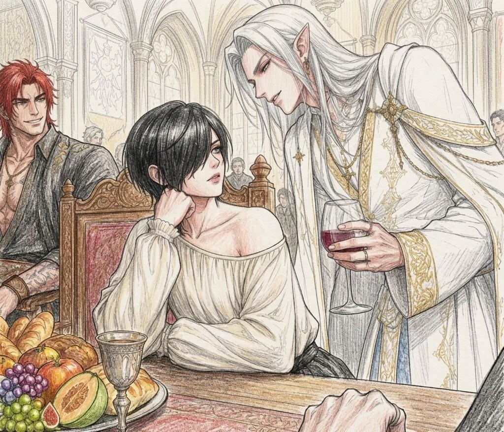
— Com licença, bela donzela... — Vane murmurou, inclinando-se de forma invasiva. O olhar dele desceu descaradamente pelas coxas expostas de Ashlan e subiu para o ombro nu do garoto. — É um crime uma criatura tão delicada e requintada estar acompanhada de um brutamontes sem camisa num lugar como este. Se quiser, a minha mesa tem espaço de sobra, e o meu colo também.
Ashton, que tinha acabado de receber sua caneca gigante de cerveja, parou com ela no meio do caminho até a boca. Ele olhou para Vane, depois para Ashlan, e um sorriso enorme e sádico se abriu no rosto do humano. Ashton apenas encostou na cadeira, deu um gole na cerveja e se preparou para o show.
Ashlan não mudou a postura. Ele continuou apoiado na mesa, o queixo descansando sobre as mãos cruzadas. Os olhos afiados do "Pequeno Vendaval" subiram lentamente até encontrar o rosto do lorde.
— Donzela? — a voz de Ashlan saiu suave, quase sussurrada, como a brisa antes de um furacão. Ele deu uma risadinha cristalina que fez o lorde sorrir ainda mais, achando que estava abafando.
Então, o sorriso de Ashlan sumiu. A temperatura ao redor da mesa caiu.
— Olha bem pra minha cara, seu pedaço de lixo engomado — a voz de Ashlan mudou. O tom afeminado ainda estava lá, mas agora carregava o peso de navalhas de gelo. — Donzela é a puta que te pariu. — O sorriso de Lorde Vane despencou. O choque de ouvir aquele palavrão saindo de lábios tão delicados o deixou paralisado.
— O-O quê? Como ousa falar assim comi… — antes que o elfo pudesse terminar a frase, Ashlan se moveu numa velocidade impossível para os olhos nus. Em uma fração de segundo, a ponta da bainha da GaleForce estava pressionada com força milimétrica diretamente contra a virilha do Lorde Vane. A pressão foi suficiente para fazer o nobre engasgar, os olhos arregalados de terror enquanto a magia de vento zumbia letal e silenciosa ao redor da arma.
— Amor, se você olhar pras minhas pernas de novo com essa cara de babaca, eu vou soltar a trava dessa espada e transformar as suas bolas numa tempestade de carne moída — Ashlan sibilou, inclinando a cabeça para o lado com um sorriso macabro, a franja caindo sobre um dos olhos. — Eu sou Ashlan Lancehearth, Príncipe de Diamond City. E se eu quiser sentar num colo, não vai ser no de um arrombado fraco que nem você.
Ashlan deu um empurrão seco com a bainha, fazendo Lorde Vane tropeçar para trás, bater na própria mesa e cair de bunda no chão, derramando a taça de vinho em cima da própria seda cara. A taverna inteira mergulhou num silêncio mortal.
Ashton finalmente explodiu em uma gargalhada monstruosa, batendo na mesa com força enquanto o garçom chegava tremendo com a carne e a tortinha de morango.
— Eu avisei... quer dizer, eu nem avisei porque queria ver você se foder — Ashton riu, apontando a faca de carne para o lorde no chão. — Pega a porra do seu orgulho e vaza daqui antes que eu use a sua cabeça pra limpar a areia da minha lança. Tá atrapalhando o nosso almoço.
Ashlan ajeitou a blusa, pegou o garfinho minúsculo e tirou um pedaço delicado da tortinha de morango, colocando na boca com um sorriso angelical, como se absolutamente nada tivesse acontecido.
— Essa torta está divina — comentou o caçula, cruzando as pernas e balançando o pé no ar.
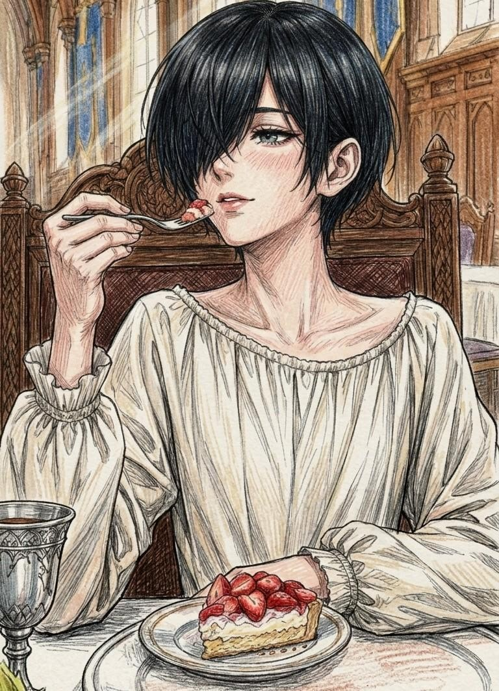
📜 O Fogo e o Gelo no Quarto Real
Enquanto Ashlan terminava de devorar sua tortinha de morango e Ashton ameaçava metade da taverna apenas com o olhar, o clima no topo da torre principal do Castelo Lancehearth era consideravelmente mais... quente.
Os imensos aposentos reais eram uma mistura do pragmatismo humano e da elegância élfica. Havia peles de feras abatidas por Dastan no chão de mármore e cortinas de seda lunar que filtravam a luz do sol para proteger os olhos sensíveis de Scarlett.
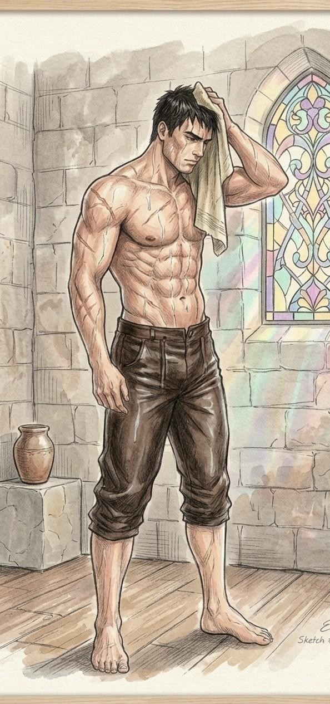
Dastan, o Rei Guerreiro, havia acabado de sair do banho. O humano, mesmo com o passar dos anos, mantinha o físico denso e brutal que fizera dele uma lenda nas planícies do sul. A água escorria pelos ombros largos e pelas cicatrizes profundas que mapeavam seu peito e abdômen, marcas de guerras antigas que ele exibia com orgulho. Ele secava os cabelos escuros com uma toalha, vestindo apenas uma calça de couro folgada, quando parou para observar a esposa.
Scarlett estava sentada diante de uma elaborada penteadeira de quartzo. A Elfa Mantra usava apenas uma camisola de seda absurdamente fina e translúcida que deslizava por seus ombros e mal cobria a fartura voluptuosa do seu corpo — a mesma genética abençoada que ela havia passado para a filha. Ela escovava os longos cabelos prateados com movimentos lentos e metódicos, os olhos de um azul gélido e hipnótico refletidos no espelho.
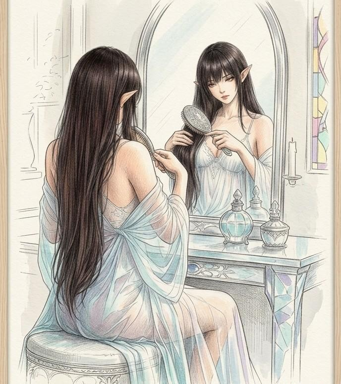
Dastan sorriu, aquele sorriso torto e presunçoso que, décadas atrás, havia derretido a fachada de gelo da guerreira mais temida do continente.
Ele jogou a toalha de lado, atravessou o quarto com passos pesados e parou atrás dela. Suas mãos grandes, rudes e calejadas de empunhar espadas pesadas, desceram suavemente pelos ombros nus da elfa.
— Eu não me canso de olhar pra você — Dastan murmurou, a voz rouca reverberando pelo quarto. Ele inclinou a cabeça, pressionando os lábios na curva macia do pescoço de Scarlett. — Os conselheiros estão lá embaixo há uma hora esperando por nós, discutindo relatórios de Zenathor. Mas eu preferia enfrentar um dragão de mãos nuas a sair desse quarto agora.
Scarlett parou a escova. Ela fechou os olhos por um segundo, apreciando o calor que emanava do marido. A "Morte Gélida", como era chamada nos campos de batalha, derretia instantaneamente sob o toque dele.
Ela ergueu a mão e acariciou os nós dos dedos calejados de Dastan que descansavam perto do seu decote.
— Você sabe que nós precisamos descer, meu Rei — respondeu Scarlett, a voz suave, elegante e carregada de uma serenidade controlada. — Se os batedores avistaram os soldados de Karyna Blackfield se movendo nas fronteiras, a nossa ausência na sala do trono será vista como fraqueza.
Dastan deu uma risada baixa, as mãos dele escorregando lentamente pela seda até abraçar a cintura da esposa, puxando-a gentilmente para que ela se recostasse contra o seu peito nu.
— Fraqueza? Que venham tentar a sorte — ele disse, beijando a bochecha dela. — Se Karyna acha que pode cruzar a fronteira de Diamond City só porque estamos de portas fechadas, ela vai provar o fio da minha espada e o gelo do seu arco bem antes do meio-dia.
Scarlett finalmente sorriu, abrindo os olhos e encarando o reflexo dos dois no espelho. A brutalidade protetora dele era a sua fraqueza. Ela se virou na cadeira, passando os braços ao redor do pescoço de Dastan, os seios fartos pressionados contra o peitoral cicatrizado dele.
— Só mais cinco minutos — ela cedeu, a voz ganhando um tom perigoso e incrivelmente sedutor. — Que os conselheiros esperem. Eu preciso garantir que o Rei Guerreiro esteja devidamente relaxado antes de tomar qualquer decisão de guerra.
Dastan não precisou ouvir duas vezes. Ele a ergueu da cadeira com uma facilidade absurda, carregando a matriarca Lancehearth de volta para a cama espaçosa, onde a política de Aetheryon foi esquecida por um tempo.
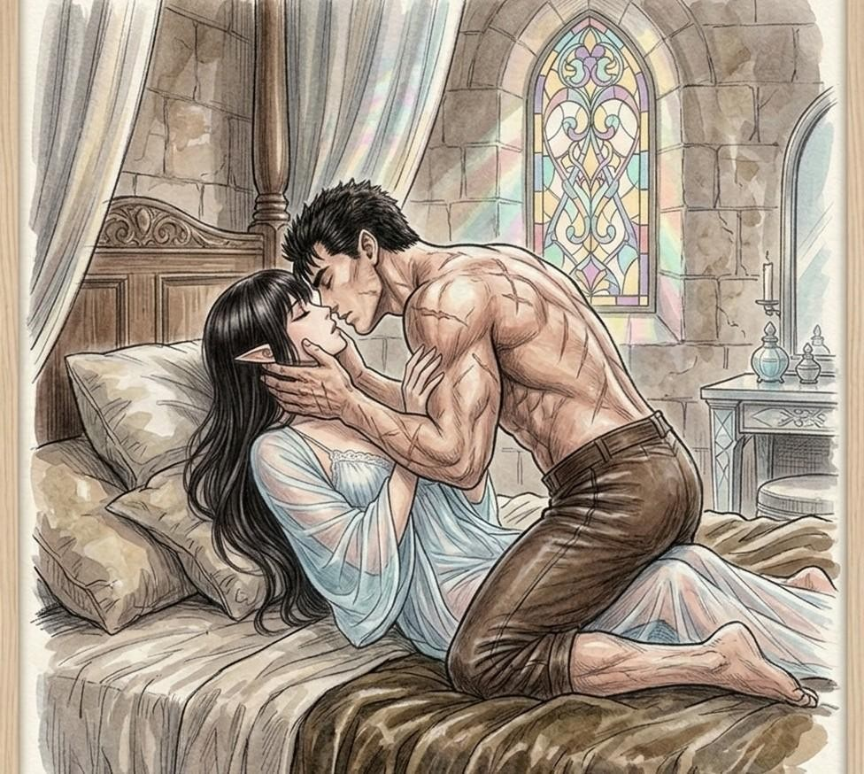
☀️ A Luz Inflexível: Princesa Ashley na Catedral
A alguns quilômetros dali, ignorando o caos dos irmãos na taverna e a "negociação" dos pais nos aposentos reais, a Princesa Ashley estava ajoelhada no centro da Catedral de Santalume.
O DivinePillar levitava a poucos centímetros do chão, girando lentamente no centro do altar. O cajado irradiava um brilho tão puro e intenso que as sombras pareciam ser fisicamente empurradas para fora do santuário.
Ashley respirava fundo. A túnica branca e dourada de Alta Sacerdotisa estava perfeitamente alinhada, mas um leve suor pontilhava sua testa. Canalizar a luz ancestral exigia concentração absoluta.
— Vael'aeth krysta... purifique a corrupção... mantenha as sombras além dos portões... — ela sussurrava o cântico em Aetheris, as mãos espalmadas para frente, enviando ondas de mana para o artefato.
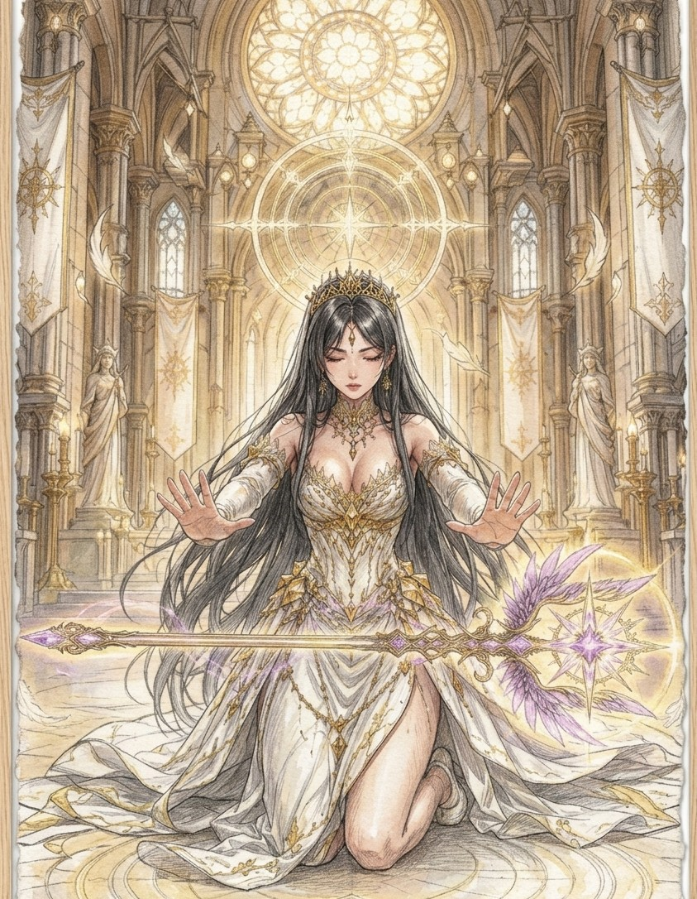
No fundo do salão, escorado na imensa porta de carvalho entalhado, estava o jovem Elian. O empregado de roupas limpas, bochechas coradas e postura tímida abraçava uma bandeja vazia contra o peito, os olhos brilhando em pura veneração enquanto observava a princesa. Para ele, Ashley não era apenas a herdeira implacável ou a irmã rigorosa; ela era uma verdadeira divindade intocável caminhando sobre a terra.
A concentração de Ashley, no entanto, foi quebrada de repente.
As portas menores da lateral da catedral se abriram com um estrondo seco, e um guarda de armadura cristalina de Diamond City entrou correndo, os passos pesados quebrando o silêncio sagrado.
— Sua Alteza! Perdoe a intrusão! — o guarda se ajoelhou às pressas, ofegante. — Temos um problema no Setor da Penumbra! A patrulha encontrou um acampamento não autorizado, e as criaturas não são de Zenathor... são do norte!
Ashley abriu os olhos lentamente. A luz dourada do DivinePillar piscou e depois se estabilizou. Ela se levantou, a expressão fechada e a postura puritana reassumindo o controle, enquanto estendia a mão para o ar. O cajado pesado voou diretamente para a palma de sua mão, o impacto ecoando pelo altar.
— Criaturas do Norte nas ruas da minha cidade? — a voz de Ashley saiu fria, austera, cheia da autoridade que ela usava para cobrar a postura de Ashlan no café da manhã. — Reúna o esquadrão de luz. A profanação termina hoje.